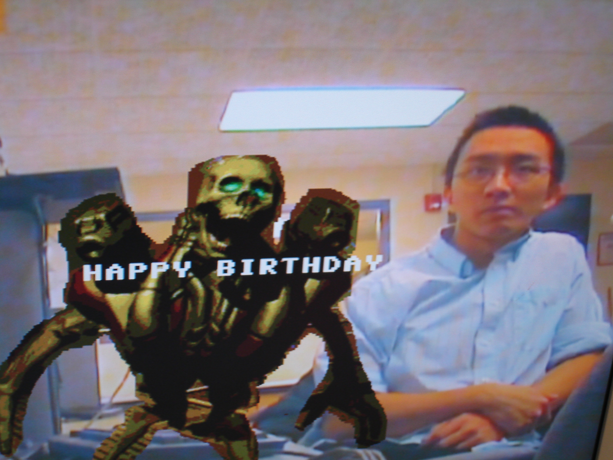
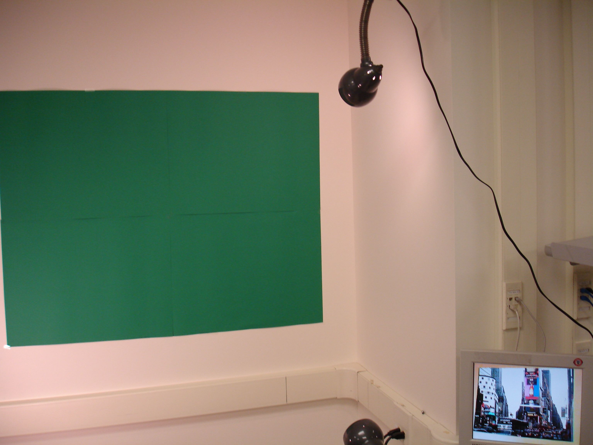
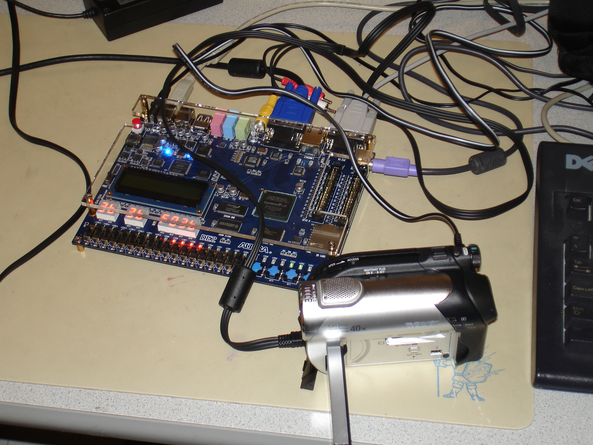
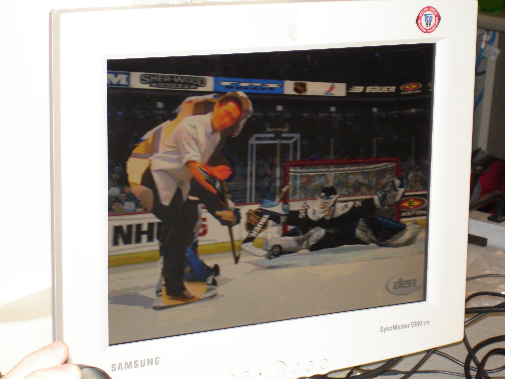
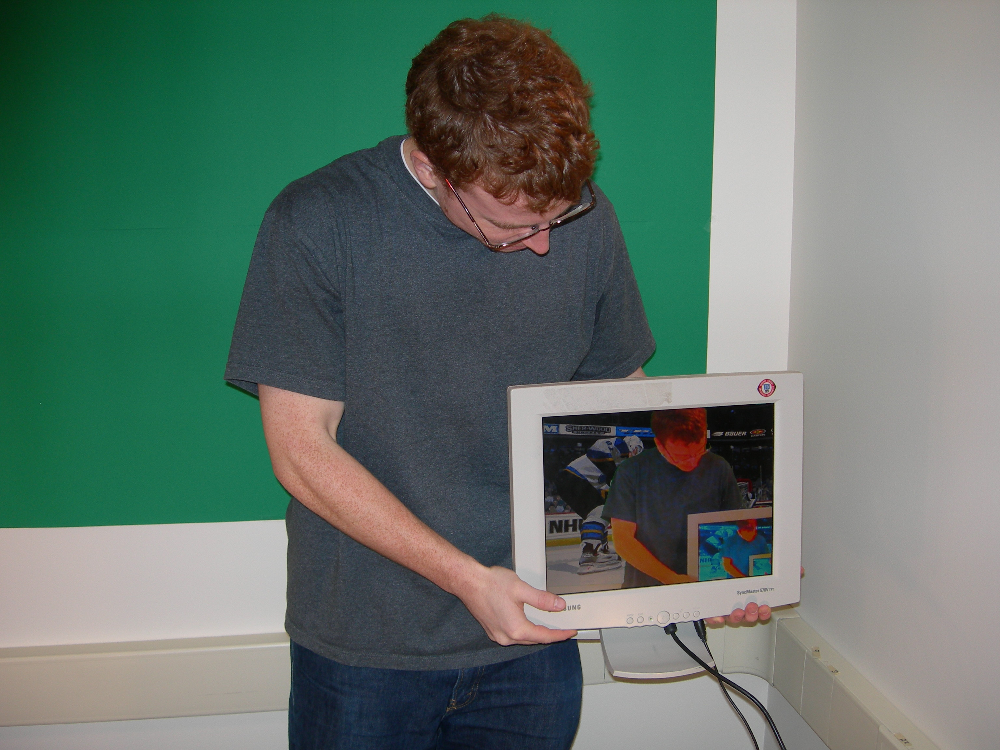
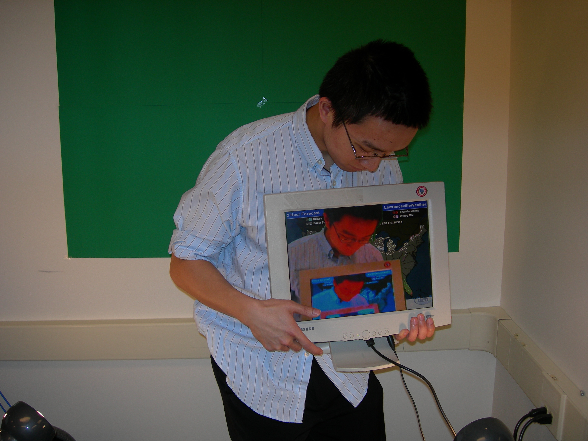
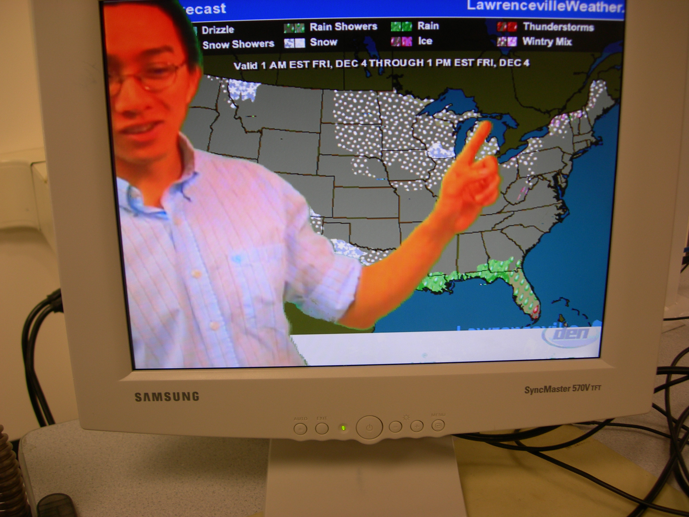
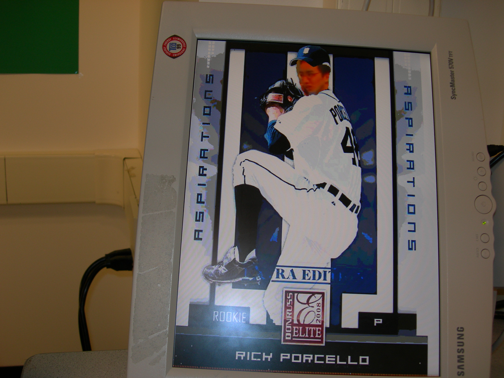
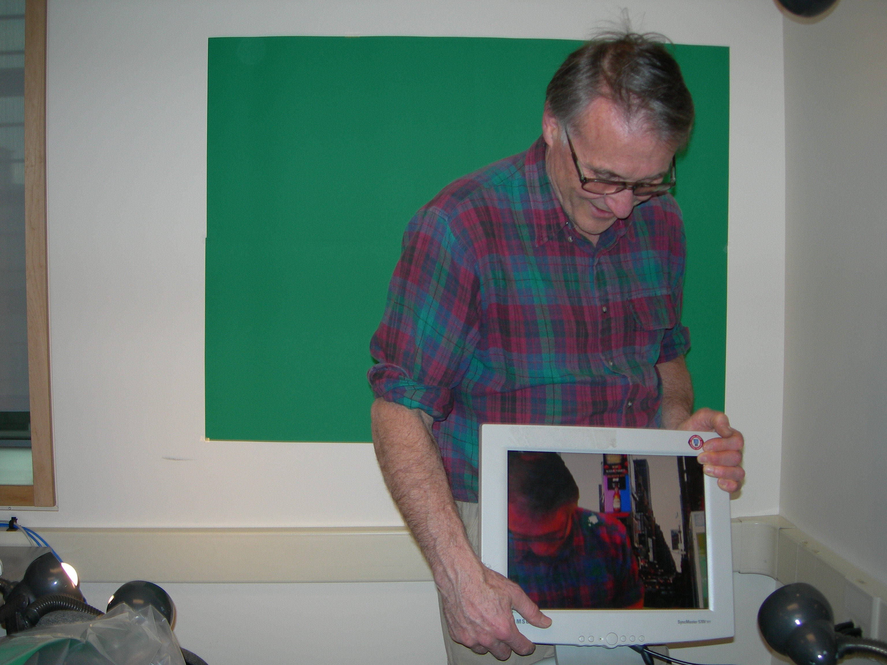
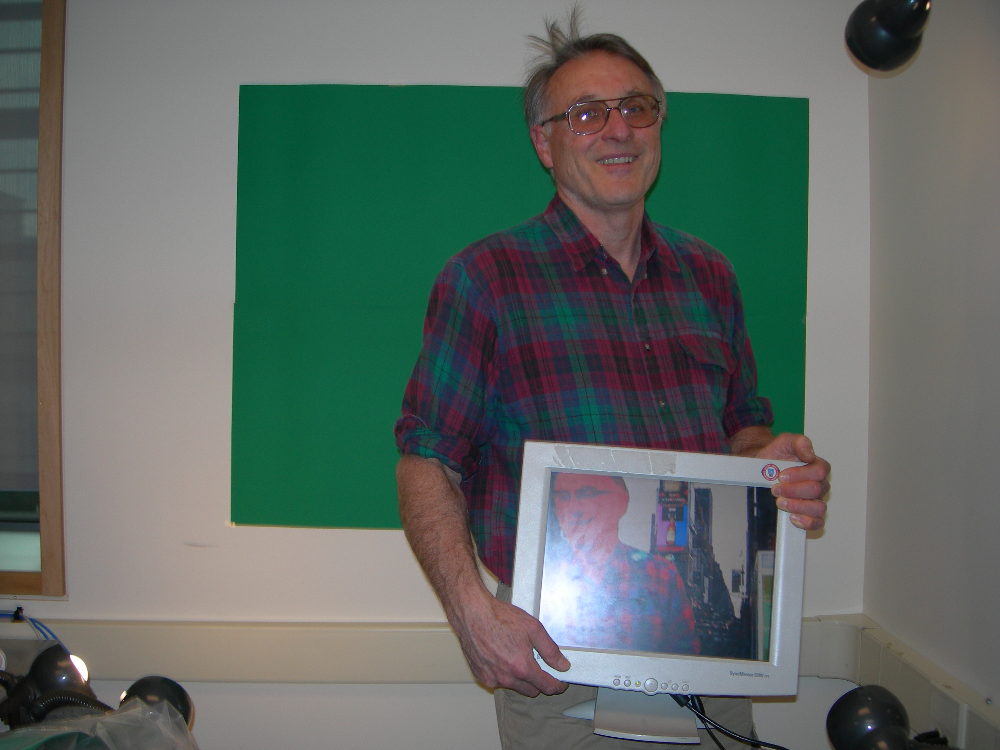

James Du (jsd46)
Peter Greczner (pag42)
|
The green screen is very stable. There is no noticeable flickering in it. When testing the green detection using a green image on a VGA monitor, there was a one or two pixel green border around the edge of objects in front of the green screen. We tried to fix this by adjusting thresholds; the border was reduced from what we had originally, but we could not completely get rid of the border. However, when we ran our implementation on the actual green screen we ended up using, the green border was completely gone except when shadows were cast on the green screen.
Reverse Green Screen works perfectly since we know the exact color of the green in our uploaded image, but the video quality and image quality are not as high as they can be due to limits in upload speed. We attempted to transfer video instead of just images to SRAM but could not get frame rate to exceed a few frames per second, even with only black and white video. The fading effect works but looks strange. Text starts fading in as strange colors before settling in as their final text color. We had originally wanted to implement more features with writing text to the screen but ran out of time. Once text is on the screen, it appears completely stable. Keystroke recognition works well immediately after uploading our design to the DE2 board but starts to malfunction if random keys are spammed. Serial Interface ResultThe result of this part of the project are two modules that can be configured at any baudrate to work with another serial receiver and transmitter pair that follow RS-232 protocol and have specified 8 data bits, 1 start bit, 1 stop bit, no flow control, and no parity bits.It packages data into packets of 16 bytes that have a CRC type check performed on them to ensure accuracy of delivery and can also detect timeout failures and send a timeout NACK to the other receiver. Sample tests of the transmission indicated that we get on average a single bit error every 1 million bits sent approximately. From research we have found that “acceptable” error rates for RS-232 at a baud around 9600 should be from every 1 billion bits to every 1 trillion bits. However because we are running at an extremely high baud rate and our module has the ability to perform error detection this is not really a problem because we can always resend the data. Transmission of the data for a 640x480 image took approximately 36 seconds to perform, and transmission of a 320x240 black and white image took approximately 1 second to perform. Theoretical results at a baud of 115200 indicate that we should expect it to take 35.6 seconds and 1.1 seconds respectively. Therefore it appears that our serial transfer incurs almost no lag and is performing almost as fast as theoretically possible. The C executables that we created are very easy to use and the user only has to specify an image name following the executable name. Transmission will take place immediately and accurately. Images         Videos |